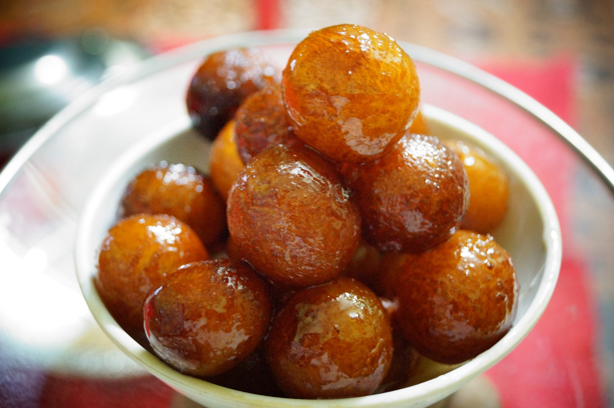

Gulab Jamun

Ingredients:
- 1 cup milk powder
- 1/4 cup all-purpose flour
- 1/4 tsp baking soda
- 2 tbsp ghee
- 1/4 cup milk
- 1 tsp cardamom powder
- Ghee or oil for frying
Instructions:
- In a bowl, mix milk powder, flour, and baking soda. Add ghee and mix until crumbly. Gradually add milk to form a soft dough. Let it rest for 15 minutes.
- For the syrup: Combine sugar, water, and cardamom in a pan, boil until the sugar dissolves. Simmer for 5 minutes.
- Shape the dough into small balls. Fry them in hot ghee or oil until golden brown.
- Place the hot gulab jamun into the warm sugar syrup and let it soak for at least 30 minutes.